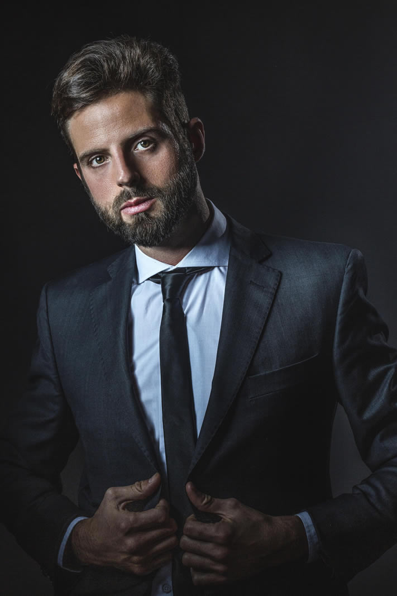

Menor trauma
Trabajo óseo controlado, sin fracturas bruscas y con mayor respeto por vasos, mucosa y tejidos blandos.
Una técnica de precisión para modelar el hueso nasal con menor trauma, menos inflamación y un resultado natural, elegante y personalizado.
La rinoplastia ultrasónica reemplaza los golpes de la técnica clásica por vibraciones controladas. Permite trabajar el hueso con más delicadeza y preservar mejor los tejidos blandos.
El bisturí piezoeléctrico actúa selectivamente sobre tejido mineralizado. Esto ayuda a reducir sangrado, hematomas e inflamación, y ofrece un campo quirúrgico más limpio para planificar cada milímetro.
El objetivo no es una nariz “operada”: es una nariz en armonía con la cara, estable en el tiempo y coherente con la identidad de cada paciente.
Consultar por WhatsApp
Cada procedimiento está pensado para respetar tu esencia, buscando la armonía y la función respiratoria.
La rinoplastia secundaria comparte la misma segmentación que la primaria: pacientes que buscan mejorar forma, función y naturalidad. La diferencia es que el punto de partida ya fue intervenido, por eso exige una planificación más profunda.
Cuando una cirugía previa dejó asimetrías, irregularidades, punta caída, obstrucción respiratoria o un resultado que no acompaña el rostro, el abordaje debe ser preciso, realista y cuidadoso con los tejidos ya operados.
Cada indicación se define en consulta. La tecnología ayuda, pero el criterio quirúrgico y el análisis facial siguen siendo el centro del resultado.
Trabajo óseo controlado, sin fracturas bruscas y con mayor respeto por vasos, mucosa y tejidos blandos.
Menos hematomas e inflamación en muchos pacientes, con una vuelta social generalmente más cómoda.
El plan se adapta a tu anatomía, tu respiración y tus objetivos, evitando resultados artificiales.
Análisis facial, respiratorio y fotográfico para entender tu caso.
Definición honesta de qué puede mejorarse y qué resultado es realista.
Técnica ultrasónica y maniobras estructurales según tu anatomía.
Controles postoperatorios para acompañar la evolución del resultado.
Es la evolución más avanzada en cirugía estética y funcional de nariz. A diferencia de las técnicas del pasado, utiliza un bisturí piezoeléctrico que emite vibraciones ultrasónicas. Esta tecnología de punta permite esculpir los huesos nasales con control milimétrico, respetando íntegramente los cartílagos y tejidos blandos circundantes.
La cirugía tradicional utiliza herramientas mecánicas (como escoplos, limas y martillos) que rompen el hueso de manera más brusca, generando un trauma inevitable en la zona. La rinoplastia ultrasónica reemplaza el golpe por la vibración de alta frecuencia. El hueso se pule y corta de forma suave y controlada, lo que se traduce en una cirugía mucho menos agresiva para tu cuerpo.
Resultados más naturales: El control absoluto sobre el hueso permite al Dr. Vila lograr una armonía perfecta que respeta tu identidad facial.
Menos moretones (hematomas): Al no dañar los vasos sanguíneos vecinos, la aparición de marcas oscuras en el rostro disminuye drásticamente.
Menor inflamación: El daño tisular es mínimo, por lo que la hinchazón postoperatoria es notablemente más leve.
La recuperación es mucho más amable y menos dolorosa que en una cirugía convencional. La mayoría de nuestros pacientes no reportan dolor, sino más bien una sensación de congestión nasal —similar a la de un resfrío fuerte— durante los primeros días.
Gracias al uso del ultrasonido, el proceso de curación se acelera significativamente. Por lo general, los pacientes pueden retomar sus actividades sociales y laborales livianas en aproximadamente 7 a 10 días, luciendo un aspecto muy favorable desde el primer momento en que se retira la férula.
Absolutamente. La nariz no solo debe verse bien, sino funcionar a la perfección. Durante la rinoplastia ultrasónica, el Dr. Vila realiza un abordaje integral: se pueden corregir tabiques desviados (septoplastia) y cornetes hipertrofiados en la misma intervención para garantizar que respires tan bien como te ves.
El Dr. Leandro Vila suele utilizar un abordaje abierto (una incisión imperceptible en la base de la nariz, llamada columela). Esto le permite tener visión directa y usar el ultrasonido con la máxima precisión. Una vez que la zona cicatriza, esa pequeña marca se vuelve prácticamente invisible a simple vista.
Escribinos para coordinar una consulta. Revisamos tu caso, tus objetivos y si la rinoplastia ultrasónica primaria o secundaria es la mejor opción para vos.
Coordiná tu evaluación por WhatsApp y te enviamos los detalles para la consulta presencial.